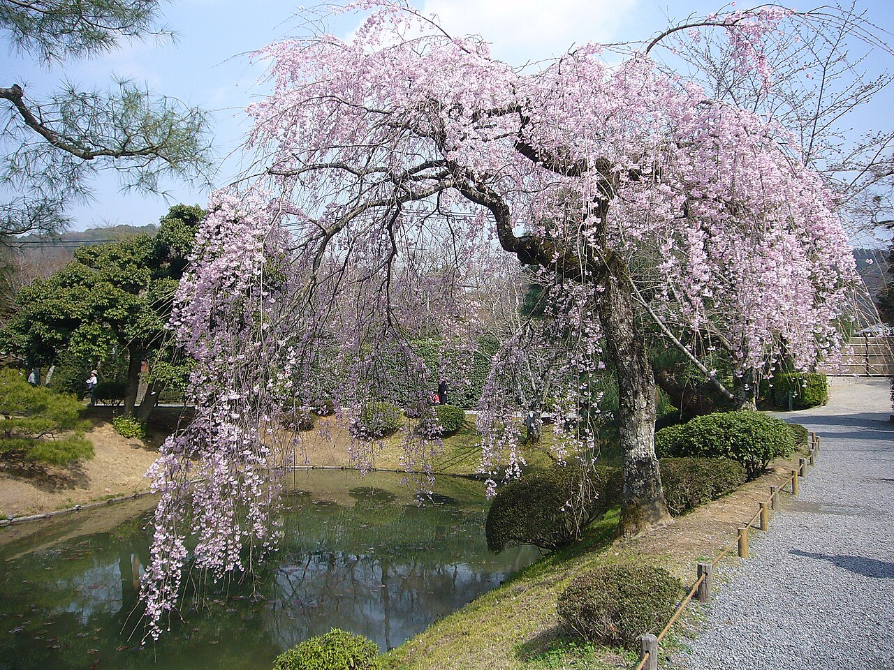
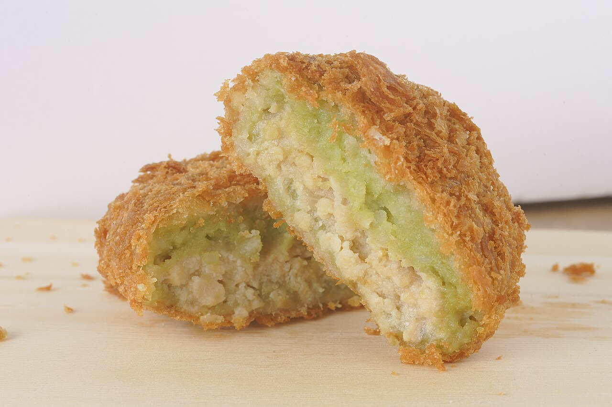
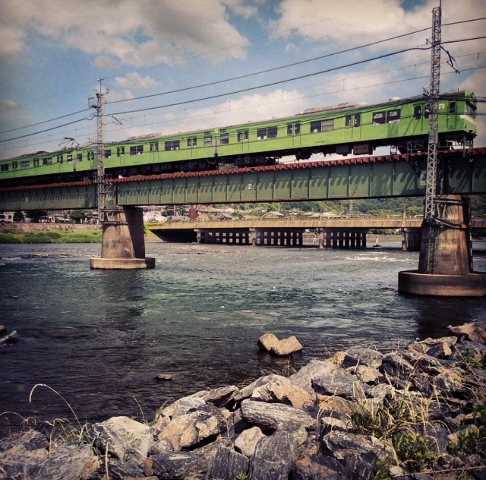

A riverside town between Kyoto and Nara that grows the best matcha in Japan and has been at it for 800 years. Small, walkable and calm, it pairs perfectly with a morning among the Nara deer.



The Phoenix Hall floating over its pond, the temple on the back of the 10-yen coin.
The lane to the temple is wall-to-wall tea houses, matcha soft serve, tea-dusted everything.
Sit down for stone-ground matcha prepared in front of you at a centuries-old shop like Tsuen, the oldest tea house in the world.
A wide green river with cormorant fishing boats and a bridge that's been rebuilt since the 600s.
Green tea noodles for lunch, when in Uji.